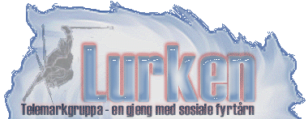

|
 Utgave nr. 1 1999
Velkommen til årets første utgave av Lurken
I fjor kom det som kjent bare ut en Lurk, noe som vi skal klare å slå I år. Årets store nyhet på klubbavisfronten er at Lurken også er å finne på verdensveven! Målsettingen vår er å få ut fire utgaver av klubbavisen vår. Vi setter derfor veldig stor pris på om noen har noen bidrag til en av våre utgaver. Hvis det er noen som har vært på en eller annen tur, har fått snusen I noe fett sladder, tatt noen kule bilder eller rett og slett føler for å si noen velvalgte ord til de andre I gruppa, så ikke nøl med å si ifra. Vi I redaksjonen blir I alle fall ufattelig glade. Håper dere koser dere med bladet vårt! I dette nummeret kan du kose deg med følgende: Bidrag og tips sendes til lederen for Lurken. - Webansvarlig har utarbeidet Lurken på verdensveven. |